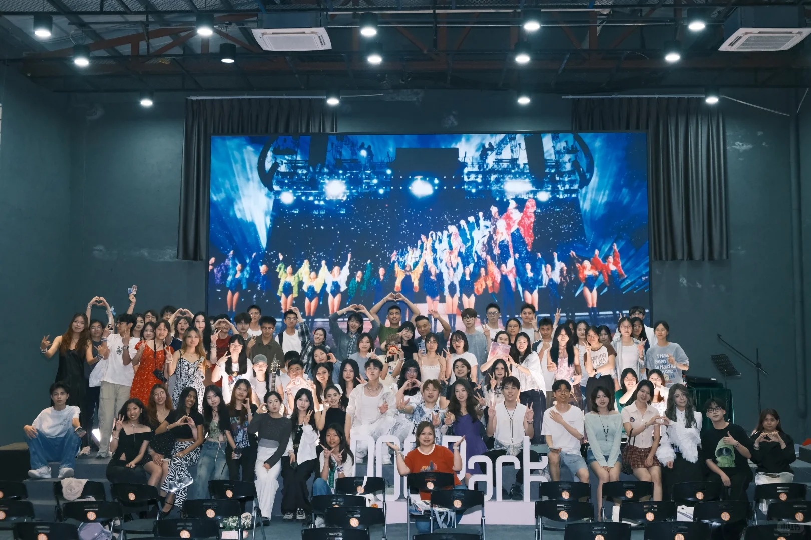
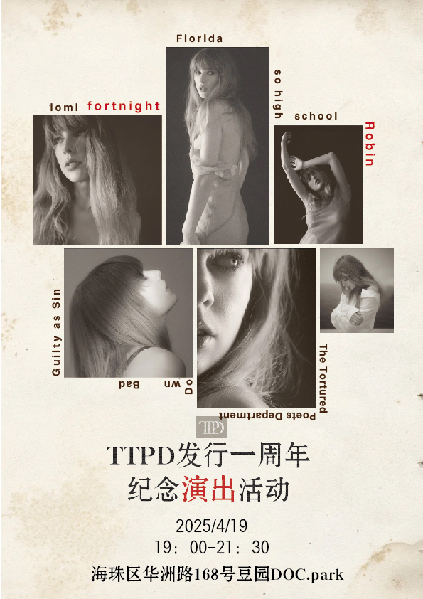

04
CASE 01｜MUSIC COMMUNITY
TTPD Taylor Swift 歌迷音乐会
发起人 / 主办 / 全流程运营｜2025.04 - 2026.04
围绕 Taylor Swift 专辑周年节点，发起广州线下公益音乐聚会。这个项目最贴近酷狗音乐垂类运营：从音乐兴趣人群洞察开始，完成内容预热、用户招募、社群维护、节目组织、现场执行和活动回顾。
20 天内完成从创意到落地
120 人微信私域社群
约 100-110 名用户到场
6 篇小红书 + 2 篇公众号推文
- 将专辑周年设计成粉丝可参与事件：弹唱、手链交换、互动问答、即兴合唱。
- 通过小红书私信和粉丝群定向触达，招募歌手、志愿者和首批观众。
- 拆分签到、场控、物料、摄影、舞台技术和宣传岗位，保障现场推进。

